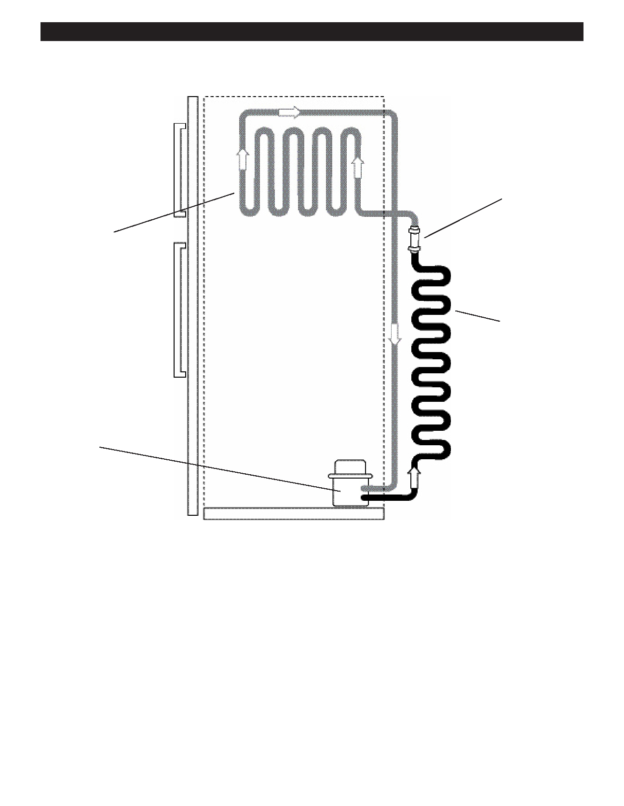

PA RT I C I PA N T R E S O U R C E G U I D E
Refrigerator Basics (continued)
Expansion valve
Evaporator coils
Condenser coils
Compressor
There are five basic parts to a refrigerator:
Compressor – The compressor compresses the refrigerant gas and forces it through metal coils. This process raises the
refrigerant’s pressure and temperature.
Condenser coils – The coils located outside, on the back of the refrigerator, let the hot refrigerant gas dissipate its heat.
Expansion valve - As it cools, the refrigerant condenses into liquid form and flows through the expansion valve. When it
flows through the expansion valve, the liquid refrigerant is allowed to move from a high-pressure zone to a low-pressure
zone, so it boils and vaporizes. In evaporating, it absorbs heat, making it cold.
Evaporator coils – The coils set inside the unit allow the refrigerant to absorb heat, making the inside of the
refrigerator cold.
Refrigerant – liquid that evaporates inside the refrigerator to create the cold temperatures. The first refrigerant was
ammonia, which boils at -27° F. However ammonia is highly toxic to people, so chlorofluorocarbons (CFCs) were
developed in the 1930s. In the 1970s, it was discovered that the CFCs in use were harmful to the ozone layer. As of
the 1990s, all new refrigerators use refrigerants that are less harmful to the ozone layer. Modern refrigerators use a
regenerating cycle that reuses the same refrigerant over and over again.
The cold gas is sucked up by the compressor , and the cycle repeats itself.
78